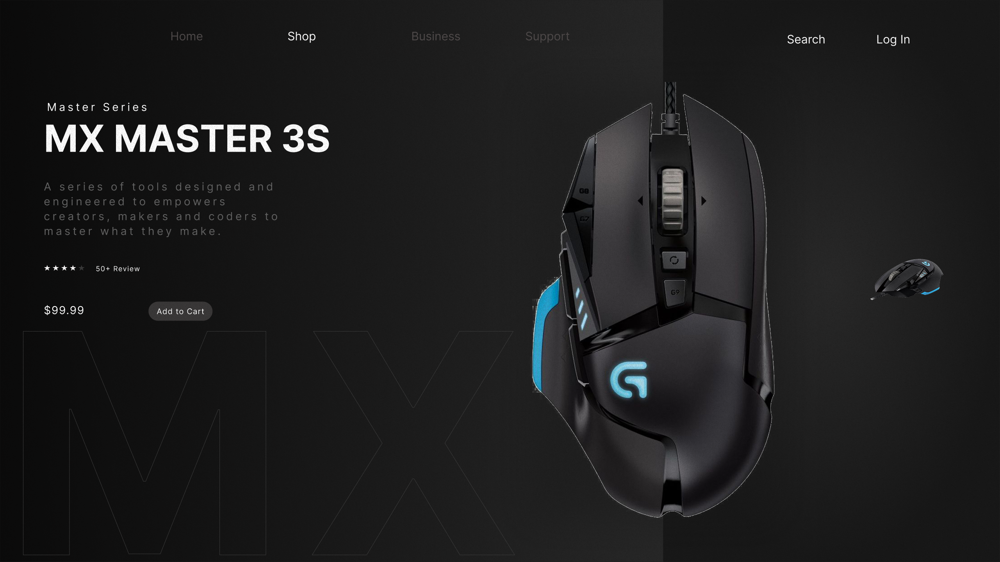

Design Work
Visual
Portfolio.
UI/UX and graphic design crafted with attention to detail and user-centered principles.

UI/UX Design
Nike Shoes Design
Designed this sneaker landing page concept in Figma featuring the Nike Air Max 90. The goal was to create a modern e-commerce interface where the product becomes the center of attention. A dark UI, strong typography, and a floating product layout help deliver a premium shopping experience.
UI/UX Design
Glassmorphism UI Design
Experimenting with **glassmorphism UI design** today — simple shapes, soft blur, and clean gradients to create a modern look.

Graphic Design
Gaming UI Design Concept
Created a **modern product page design for a DualSense Wireless Controller** with a dark gaming aesthetic and bold red accents.

UI
UI Design
Mouse
Meet the MX Master 3S — built for creators, coders, designers, and professionals who demand more from their tools.